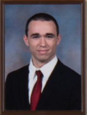
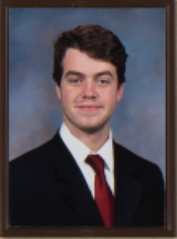
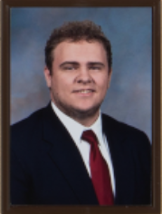
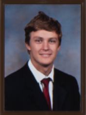
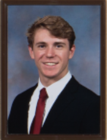
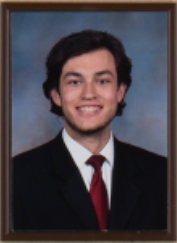
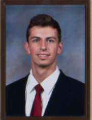
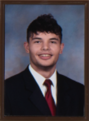
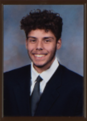

The Alpha Xi chapter was founded October 29th, 1939 at Illinois Institute of Technology, and we just recently celebrated
our 80th anniversary last year. Our brotherhood holds the 5 values of: Silence, Charity, Purity, Honor, and Patriotism.
It is through these values that we can achieve our goal of Bettering the Man. We have helped over 1000 brothers achieve
thier collegiate goals since we were first founded.
Our house offers room and board to over 30 brothers, and employs a shared Chef and offers our own meal plan option
that is much cheaper than what is offered by the school.
Meet our Exec Board

President - Nicholas Sadowski
He is in his fourth year in Aerospace Engineering.
As President, Nick is the external face of the house and oversees the major operations of the house.

Vice President - Creighton Gaff
As the VP, Creighton manages the Executive Board and helps the board accomplish their goals.

Marshal - Alexander Smith
As the Marshal, Alex is responsible for initiating the new members.
Treasurer - Kael Seaver
Kael Manages the chapters funds and ensures we are successful with our capital.

House Manager - Tyler Wilson
Tyler maitains the physical functions of the house and is responsible for any house improvements.

New Member Ed - Riley Ellis
Riley, as the New Member Ed, teaches the new members the rich history and traditions of our house.

Recruitment Director - Easton Kays
Easton plans Rush events to attract potential new members to our chapter.

Alumni Director - Michal Markevych
Michal plans events for alumni to come back to and meet the current brothers of the chapter.

Director of Service and Philanthropy - Andriy Bench
Andriy works to support our five Philanthropic partners as well as any local volunteer groups.

Secretary - Andre Torres
As Secretary, Andre takes notes on all of the business that take place during chapter meetings and prudential board meetings.
RAINN is the the largest organization working against sexual assault. They operate the National Sexual Assault Hotline.
Our value of Silence goes hand in hand with this organization's work as its important to listen to those who are victims.
Shatterproof is a national nonprofit organization working to reverse the stigma around drug addiction. They not only help
those with addictions but support their family through the difficult time of recovery. Our value of Charity directly
coincides with this group mission of giving help to those in need. Last September, We had 4 brothers run in Shatterproof's
5K and able to raise $200 for their cause.
Aware Awake Alive educates teens and young adults on the dangers of alcohol to prevent the loss of life. Our value of Purity
is related to this organizations work.
Active Minds is an advocate for mental health, especially for those in highschool and college.
So many of the young generation struggle with depression, anxiety, etc, and instead of getting the help they need
they end up suffering alone. Our value of Honor is tied to this groups work.
"Building Homes Rebuilding Lives." That is the motto for Homes for our Troops. They build homes for veterans who were
injured during duty. The homes they build are highly accesible and allow the veterans to regain the freedom of movement
in their own homes. Taking care of our heroes goes along with our value of Patriotism.
Recent Accomplishments
2019 was a good year for the Alpha Xi chapter. We welcomed 20 new brothers into our family, improved our house GPA,
and renovated our basement to be updated with the ktichen we renovated a couple years back. Not only did we do well internally,
but Externally as well. At Greek Formal our house took home Chapter of the Year. ALl of our accomplishments were being
recognized by our peers in the greek community.
During the Summer of 2019, our National Headquarters held Elevate in Phoenix, Arizona. Our chapter was able to send 12 brothers
to the leadership conference to develope skills and learn new ideas that they could bring back to improve the chapter.
During the Cardinal and Stone Banquet our chapter was awarded a Bronze Cup for our outstanding effort the previous year.